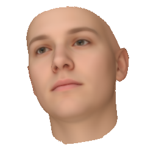
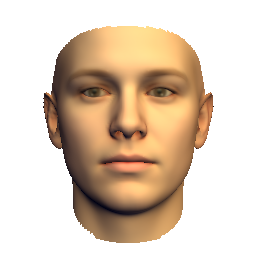
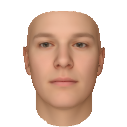

This is a short introduction to Scalismo-Faces. First we will setup the environment and tooling. Then we will setup an initial project with skeletal source code. After obtaining the project we need a model to start exploring the library. Finally we will produce some images. Please note that it is essential that you are running a 64-bit system!
Our environment should run on the most common platforms (Linux, Windows and OSX). The minimal need is a 64-bit JDK, preferably the version 1.8.0_131 or newer. Additionally we need the build tool sbt. This would be enough but for convenience we propose to install also a git client and the Intellij IDEA.
Please install the following tools:
| Tool | Download Link | Test command (will be executed in the next step of the tutorial) |
|---|---|---|
| JDK 1.8.0_131 64-bit | all OS | java -version |
| git | all OS | git --version |
| sbt | all OS | sbt sbt-version |
| Intellij IDEA | all OS | (first start later in this tutorial) |
In this step we provide you with a small "Hello World" example project. First, we download the project, then we run it from the command line and set up the IDE for the later usage.
To test your java installation you can use the following command:
java -versionThe output should look similar to:
java version "1.8.0_131"
Java(TM) SE Runtime Environment (build 1.8.0_131-b11)
Java HotSpot(TM) 64-Bit Server VM (build 25.131-b11, mixed mode)Note: Make sure that your architecture is 64-Bit!
Next, to check your installation of git enter the following on a command line.:
git --versionNote: On windows you should have a program called Git BASH after the installation of git.
While the exact version does not matter, the output of the above command should be something as simple as:
git version 1.9.1To get the project, we need to clone the repository using git. To download the project using git, change in the console to somewhere where you want the new project to be added. The cloning of the project creates a new folder in the directory where you execute the command. You can now get the project with the following command (replace [USERNAME]):
git clone https://github.com/unibas-gravis/pmm2018-faces.gitThe IDE we use supports git. So we do not need to know more about the commandline usage of git. However, a good starting point to learn more about the commandline interface is the official documentation.
To check whether sbt is installed correctly execute:
sbt sbt-versionLooking at the output you should see at the end of the output a line similar to:
...
...
[info] 0.13.8Change in the console to the directory summerschool. We will now run the project. This will trigger the project to be built by sbt. Note that the initial build will download some dependencies specific to the project. This may take a while. The command to run the project is:
sbt runThe output should indicate at the end, that the process finished with success:
...
...
Summerschool 2017!
[success] Total time: 0 s, completed May 10, 2017 5:23:30 PMSbt is integrated in the IDE, so we will not explain more about the usage. If you want more information go to the official documentation.
Now it is time to start the IDE. What we need to make sure is that you enable the scala plugin. Then we will import the project.
When you start the IDE for the first time you can configure which parts are enabled and or downloaded. We recommend to go with the default settings as long as you have enough disk space. Go through the dialog step by step until you encounter the point Feautured Plugins. Then select to install the Scala Plugin.
If you have already used the IDE but have not yet installed the Scala plugin, you can enable it through the menu File/Settings/Plugins
When the scala plugin is installed and you get displayed the welcome screen, choose Open ... Then navigate to the folder containing the project and mark the summerschool folder before you hit OK.
In the next dialog check that the Project SDK points to the location where you installed the Java SDK. If the checkbox auto import is shown, activate it. Then continue by clicking onto the OK button.
When the dialog SBT Project Data To Import is shown you can deselect the summerschool-build entry and continue with OK.
Now the IDE should change and display the project. When you start the IDE for the first time, there is a lot of processing that is done in the background. In the bottom right you can spot an indication for the ongoing work. Due to the workload it may take a while until the IDE reacts responsive.
To see what is already present in the project hit [Alt+1] which should display the project structure tab to the left. If you do not see the project structure, then have a look at the top of the newly opened view. There should be a drop down list where you can select Project. You should then be able to navigate through the project folder to summerschool/src/main/scala/ and double-click GeneratingImages. This will open the code of the application we have already executed before from the console using sbt.
To execute the file from within the IDE right-click the source file and select Run 'GeneratingImages'. Alternatively you can use the shortcut which is marked after the menu entry. Depending on your setting it might be [Ctrl+Shift+F10].
To use git or sbt from within the IDE go to the menu View/Tool Windows and select what you want to do. If not yet enabled, you have to activate the git plugin over the menu File/Settings/Plugins.
We begin the introduction to scalismo faces with a closer look at the file GeneratingImages.scala and develop it successively towards a full application that uses a model to generate images. In the end we will start to analyse images.
The initial file we provided looks like this:
object GeneratingImages extends App {
println("Summerschool 2018!")
}The first thing we need in order to proceed and generate images is a model. The Basel Face Model (download page) is available freely for research purposes. Following the above link you will recieve an email with two download links. Make sure you take the one for the *.h5 file and not the one for the *.tgz file. We suggest that you save the model in the data folder under your project and name it model2009-bfm.h5.
Next we need to load the model. Scalismo-faces uses the same structure as scalismo for all IO tasks. There is the package scalismo.faces.io with different classes to write and load files of specific type. We load a model of the class MoMo which is a combined shape and color model. From the io package we use the class MoMoIO to load the model.
import java.io.File
import scalismo.faces.io.MoMoIO
scalismo.initialize()
val modelFile = new File("data/model2009-bfm.h5")
val model = MoMoIO.read(modelFile).getAdditionally to the model we need some parameters which specify the computer graphic process for generating the image. First we define the model coefficients, all set to zero. Then we create default render parameters with the former model coefficients for an image of size 640x480:
import scalismo.faces.parameters.{MoMoInstance, RenderParameter}
val modelInstance = MoMoInstance.fromCoefficients(model.zeroCoefficients, modelFile.toURI)
val parameters = RenderParameter.default.
withMoMo(modelInstance).
forImageSize(640, 480)Now that we have the model and a set of parameters we render the image and display it in a window. For this we need a renderer that can generate an image for a set of parameters. We construct a MoMoRenderer and directly pass the model to it. Then we use the renderer to generate an image given our parameters.
import scalismo.faces.sampling.face.MoMoRenderer
val renderer = MoMoRenderer(model)
val image = renderer.renderImage(parameters)To display the image we create an image panel. Finally we show the image panel in a new window with the title "First Image". While the IDE usually helps to find the correct imports, the import with the GUIBlock can not be resolved by the IDE. If it is missing, the function displayIn will not be found.
import scalismo.faces.gui.ImagePanel
import scalismo.faces.gui.GUIBlock._
val panel = ImagePanel(image)
panel.displayIn("First Image")The image fills the complete frame that is opened. Due to the parameters the face covers only a smaller region in the image center.
Let us now change the parameters and so generate a different image. We will scale the face by changing the pose part of the parameters. Then we render a new image and display it in a second window.
val newPose = parameters.pose.copy(scaling = 1.3)
val scaledParameters = parameters.copy(pose = newPose)
val image2 = renderer.renderImage(scaledParameters)
val panel2 = ImagePanel(image2)
panel2.displayIn("Modified Image")To further modify the face we change the model instance part. We set the first two components to 3.0. Then we update the set of parameters with the new instance, render a third image. This time we update the image in the second panel.
val newShape = IndexedSeq(3.0,3.0) ++ modelInstance.shape.drop(2)
val changedInstance = modelInstance.copy(shape = newShape)
val changedShape = scaledParameters.copy(momo = changedInstance)
val image3 = renderer.renderImage(changedShape)
panel2.updateImage(image3)We have seen how to generate different images. Now, we want to compare images. We will look at two operations. First we want to compute an image to look at the difference. Then we want to calculate a numeric value expressing how much different the two images are. Finally we will analyse a set of images.
So lets start to calculate an image that is the difference of two images. For this we will calculate the pure difference of two images. Then we scale the colors so that the color differences do not exceed the normal color space.
The images are of type PixelImage[A], a class which is parametrized over the pixel type. Here we will use RGBA as pixel type. For RGBA basic mathematical operations are implemented such as -, + or scaling with a scalar. We can use the functions zip with to images followed by a map to calculate an image based on pixel pairs. Using this the function for calculating the difference image looks as follows:
import scalismo.faces.color.RGBA
import scalismo.faces.image.PixelImage
def differenceImage(
imageA: PixelImage[RGBA],
imageB: PixelImage[RGBA]
) : PixelImage[RGBA] = {
imageA.zip(imageB).map { case (pixel1, pixel2) =>
val colorDifference = pixel1 - pixel2
val scaledTo_0_1 = colorDifference * 0.5 + RGBA(0.5, 0.5, 0.5, 1.0)
scaledTo_0_1
}
}Then we apply the function:
val difference = differenceImage(image,image3)Let us create a UI that displays two images together with the difference image in one frame. We use stack and shelf form scalismo.faces.gui.GUIBlock to combine multiple panels to one. We then assemble the UI in the following way:
val targetPanel = ImagePanel(image)
val imagePanel = ImagePanel(image3)
val differencePanel = ImagePanel(difference)
val sideBySide = shelf(targetPanel, imagePanel)
val overview = stack(
sideBySide,
differencePanel)
overview.displayIn("Comparison")To not only compare the two images visually we want to further calculate the average difference between the overlaying region of the two faces. We calculate the mean squared differences of the color values that overlap. Note that here we zip the values of the two images together. Then we map the values. This results in a sequence of values that we can further process instead of returning an image. We then sum the resulting values and divide the sum by the number of terms:
def meanSquaredDifference(imageA: PixelImage[RGBA], imageB: PixelImage[RGBA]) = {
val diffsSquared = {
for (
(colA, colB) <- imageA.values.zip(imageB.values)
if ( colB.a>0 && colA.a>0 )
) yield {
val diff = (colA - colB)
diff.dot(diff)
}
}.toSeq
diffsSquared.sum / diffsSquared.size
}Lets look at the MSE between the two displayed images:
println(meanSquaredDifference(image,image3))We get a rather low value, as we are evaluating only the region where the two faces overlap. This is usually impossible in a real world setting.
Lets start now to analyze an image. To have also a ground truth, we load some target parameters and generate the image they describe. We will then try to analyse the so generated image:
import scalismo.faces.io.RenderParameterIO
val targetParameters = RenderParameterIO.read(new File("data/day1/targetParameters.rps")).get
val targetImage = renderer.renderImage(targetParameters)
targetPanel.updateImage(targetImage)Next, we analyze the difference of two images when changing a single parameter:
import breeze.numerics.abs
val states = for ( angle <- -3.145 to 3.145 by 0.1) yield {
val rotatedParams = parameters.copy(pose = parameters.pose.copy(roll = angle))
val rotatedImage = renderer.renderImage(rotatedParams)
imagePanel.updateImage(rotatedImage)
val diff = differenceImage(targetImage,rotatedImage)
differencePanel.updateImage(diff)
val value = meanSquaredDifference(targetImage,rotatedImage)
(angle,value)
}Can you guess whats the best roll angle will be? Let us check which of the visited angles has the lowest MSE:
val best = states.sortBy(t => t._2).head
println(s"Best value: ${best._2} at roll-angle: ${best._1/math.Pi*180}°")Was it approximately your guess? next we display the image corresponding to the best parameters:
val bestParams = parameters.copy(pose = parameters.pose.copy(roll = best._1))
val bestImage = renderer.renderImage(bestParams)
imagePanel.updateImage(bestImage)
val bestImageDiff = differenceImage(bestImage,targetImage)
differencePanel.updateImage(bestImageDiff)As expected the face matches quite nicely, especially the facial features. We now plot the MSE over the angle and the difference to the groundtruth with the following piece of code:
import breeze.plot._
val f = Figure("Roll dependent image difference")
val p = f.subplot(0)
val (x, y) = states.unzip
p += plot(x, y, name = "MSE of images")
p.ylim = (0.0,0.3)
p.legend = trueIt is clearly visible that there are a few local optima. Depending on the initialization and the optimization they can become a severe problem.
Next, we introduce a small challenge of this first day.
Your challenge of the first day is to figure out which parameters were used to generate the following image:
The image is located in the folder data/day1/targetImages/challenge.png. The extraction of all parameters from a single image is the end goal of this course. For today we ease the task a bit. We provide several images where only one block of the parameters is changed. Which one is indicated by the name of the image. The following images are also located in the folder data/day1/targetImages/:
| pose.png | illumination.png | model.png |
|---|---|---|
|  |  |  |
More details on the parameters to estimate are:
For the pose only the three rotation angles need to be estimated. A frontal face pose corresponds to all rotation angles set to zero. The angles are specified in radians.
We use spherical harmonics to encode the illumination conditions. The method fromAmbientDiffuse calculates the spherical harmonics parameter from a given directional light. You only need to determine the diffuse color and the direction. The color and the direction values lie all in the interval [0..1]. The ambient light has all three color values set to 0.5. You can then generate the parameters using the following code snippet.
val params: RenderParameter = ???
val ambient = RGB(0.5,0.5,0.5)
val diffuse: RGB = ???
val direction: Vector[_3D] = ???
val newSHLight: SphericalHarmonicsLight = SphericalHarmonicsLight.fromAmbientDiffuse(ambient,diffuse,direction)
val newParams = params.copy(environmentMap = newSHLight)For the model parameters you need to estimate only 5 shape parameters and 5 color parameters. The model parameters follow a standard multivariate Gaussian distribution.
In the following we provide different code snippets that help to get started with the challenge. Note that the initial parameters changed compared to the already used code. They are given in the first snippet.
Use the following initial parameters. You have to load the model and the target image to make the snippet work.
val modelFile: File = ???
val targetImage: PixelImage[RGBA] = ???
val momo550 = MoMoInstance.zero(5,5,0,modelFile.toURI)
val bluePrint = RenderParameter.defaultSquare.
withImageSize(ImageSize(targetImage.width,targetImage.height)).
withMoMo(momo550)import scalismo.faces.io.PixelImageIO
// load image
val poseImage = PixelImageIO.read[RGBA](new File("data/day1/targetImages/pose.png")).get
// save image
PixelImageIO.write(image,new File("data/day1/CREATED_FOLDER/image.png"))import scalismo.faces.io.RenderParameterIO
val targetParameters = RenderParameterIO.read(new File("data/day1/targetParameters.rps")).get
RenderParameterIO.write(parameters,new File("data/day1/CREATED_FOLDER/GroupName.rps"))The following snippets are a fast start for those of you who are not so familiar with scala. We encourage you to try your own algorithm.
We define a simple grid search around a median parameter. Then we go N times a delta to the right and to the left of this position. Here we show the code for the pose. You have to change the locations marked with ???:
val N: Int = 1 // number of points to either side of the median parameter
val delta: Pose = Pose(0.0,Vector(0,0,0),???,???,???)// parameter change between neighbouring points
val median: Pose = Pose(1.0,Vector(0,0,0),???,???,???) // median value of parameter
val evaluationList = for (
rollStep <- (-N to N by 1);
yawStep <- (-N to N by 1);
pitchStep <- (-N to N by 1).par
) yield {
var roll = median.roll + delta.roll * rollStep
var yaw = median.roll + delta.roll * rollStep
var pitch = median.roll + delta.roll * rollStep
val pose: Pose = ???
val param: RenderParameter = ???
val image: PixelImage[RGBA] = ???
val difference: Double = ???
(difference, param)
}
val bestParams = evaluationList.minBy(_._1)A recursive algorithm that can e.g. be combined with the above grid search:
def tryParameters(target: PixelImage[RGBA], median: Pose, delta: Pose) : Pose = {
val newMedian: Pose = ??? // use e.g. grid search here
if ( ??? /* stopping criteria */ ) newMedian
else {
val newDelta: Pose = ??? // reduce the grid spacing
tryParameters(target, newMedian, newDelta)
}
}
val targetImage: PixelImage[RGBA] = ???
val delta: Pose = Pose(0.0,Vector(0,0,0),???,???,???)
val median: Pose = Pose(1.0,Vector(0,0,0),???,???,???)
val solution = tryParameters(targetImage, median, delta)var bestValue: Double = ???
var bestParams: RenderParameter = ???
def randomChange(p: RenderParameter): RenderParameter = ???
while( ??? ) {
val newParams: RenderParameter = randomChange(bestParams)
val newValue: Double = ???
if ( newValue < bestValue ) {
bestParams = newParams
bestValue = newValue
}
}